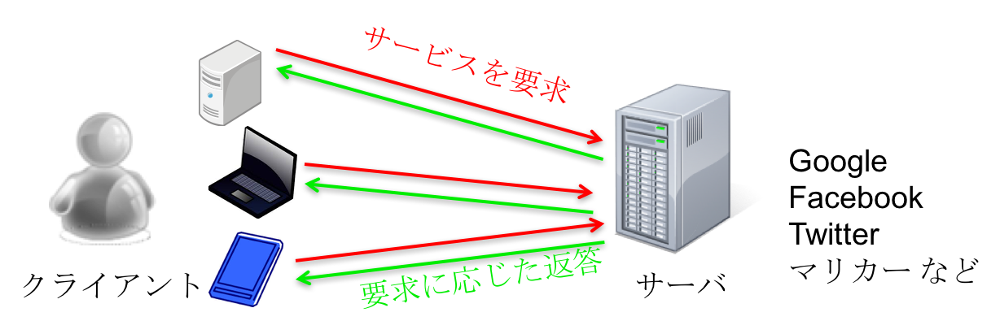
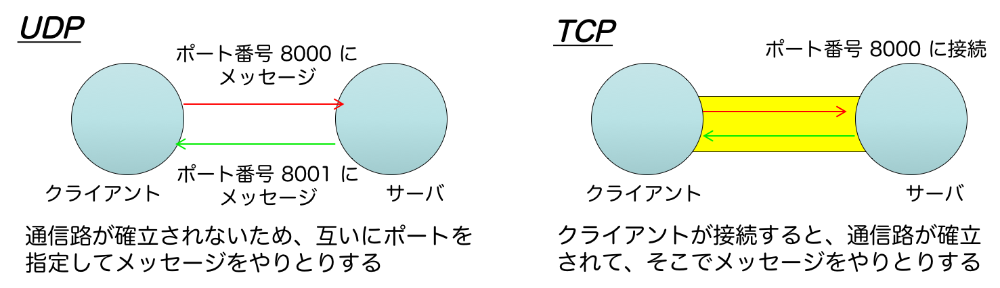

第 13 回情報工学実験 2
本課題の目的は，オペレーティングシステムが提供するネットワーク通信の機能について学び，実際にそれらを使ってネットワークプログラミングを理解することにある．具体的には，Linux を題材に，プログラム同士が通信をするために必要なシステムコールを使ったプログラミングを行う．それだけでなく，簡易なサーバプログラムのコードを読み，それの拡張を施す．今日，我々のコンピュータはネットワーク通信とは切り離せない環境にある．本演習を通じて，スマートフォンや PC 上で動作するプログラムがどのように通信を行っているかを知ることができる．
ソケットプログラミングとは
ソケットプログラミングとは，プロセス同士がネットワーク通信を通してメッセージをやりとりしながら処理を進めるプログラミングのことである．これまでに，パイプ(pipe)を使ったプロセス間でのメッセージのやりとりを行うプログラミングは経験済みである(人が多い)．ソケットプログラミングは，別の物理マシンで稼働するプロセス同士のメッセージのやりとりを可能にする．それにより，複数台のコンピュータの資源を連携・協調させ，1 台のコンピュータでは困難であった，有益な資源の共有や大規模な演算等を実現できる．本演習の意義は次のとおりである．
インターネットサービスを支えるプログラムの動作を理解する: 普段何気なくつかっているインターネットサービスが，どのようなプログラミングによって構築されているかを学習する．もちろんソケットプログラミングを学んだだけではインターネット全体を知ることはできないが，重要な部分にふれることができる． ネットワークの使い方を理解する: オペレーティングシステムによって提供されるネットワーク通信のための機能を学習する．ソケットはオペレーティングシステムによるネットワークの抽象化であり，それらをどのように使うかを実際に体感する．なお，通信の仕組み(送信メッセージがどのようなメカニズムで送信先に届くかなど)は 3 年後期の計算機ネットワークの講義で勉強する． システムプログラミングを体感する: システムプログラミングとは，OS や Web サーバのようなシステムソフトウェアをプログラミングすることを指し，CPU の機能を直に触ったりシステムコールを使いまくるようなプログラミングを意味する．簡易シェル作成ですでに体感済みであるが，ソケットプログラミングも同様で，少しでも間違うと全く別の挙動をしてしまう．これまでとは全く違う，精緻なプログラミングが要求される．
クライアントサーバモデル
ソケットプログラミングを行う前に，プロセス同士をどのようなモデルで通信させるかを学ぶ．モデルがないとプログラミングもへったくれもない．典型的なモデルがクライアントサーバモデルである．プログラムの役割をクライアントとサーバに分けて，それぞれの役割を動作を行うモデルである．サーバとは，自身が持っている資源を提供する役であり，リクエストがあったらそれの内容を解釈し，リクエストに応じた資源を提供する．クライアントはサーバに対してサービスを依頼する役である．平たくいうと，サーバは接続される側，クライアントは接続する側である．たとえば，Google や Facebook，Twitter など，サービスを提供する側で稼働しているプログラムがサーバであり，Web ブラウザやそれぞれに接続するアプリケーションがクライアントにあたる．一方，一度に両方の役割を果たすプログラムを複数稼働させながら処理を進めていくモデルを Peer-to-Peer(P2P)モデルと呼ぶ．

IP アドレスとポート番号
異なる物理マシン上のプロセスと通信するためには，1.どの物理マシンと通信するか，2.その上で動作しているどのプロセスと通信するか，を指定する必要がある．通信する物理マシンを指定するには，IP アドレスが利用される．IP アドレスとはネットワーク上に接続されている物理マシンに割り当てられている識別子である．物理マシンに割り当てられている番号を指定することによって，その物理マシンにメッセージを送信することができる．Google や Facebook などのサーバマシンにも同様に一意の IP アドレスが割り振られている．ただ，Webブラウザを筆頭に，多くの場合は IP アドレスではなく物理マシンのホスト名を指定してターゲットの物理マシンにアクセスすることが，本演習では IP アドレスを用いて物理マシンに接続するものとする．ホスト名からどう IP アドレスに変換されるか(Domain Name System)，メッセージがどう伝達されるか(ルーティング)などは後期の計算機ネットワークにて扱い，本演習では扱わない．
IP アドレスによってメッセージを送信する物理マシンを特定することができ，次はその物理マシン上において通信したいプロセスの指定方法である．プロセスにはプロセス ID と呼ばれる識別子が OS によって割り振られているので，これを指定することは困難である．プロセス ID はプロセスが生成する度に ID がかわるため，予め指定をしておくことができない．プロセス ID を予約できたとしても，新サービスが登場する度に世界中の OS を改変する，複数プロセスでリクエストをさばくことができないなど致命的な不具合がでる．そこで，通信をする際には IP アドレスに加えて，ポート番号と呼ばれる数値を指定することで，通信したいプロセスを指定する．サーバ側は，サーバプロセスとポート番号とを結びつける(bind)．クライアント側は IP アドレスとポート番号を指定することで，目的のプロセスとの通信を達成することができる．サービスを提供する実態(プロセス)とメッセージを投げる箇所(ポート番号)とを分離することで，簡潔な通信先の指定，動的な新サービスの追加などを実現できる．
ポート番号はサービスごとに固定されていることが多い．たとえば，ホームページ取得であれば 80 番や 443 番，メール受信は 110 番などである．サービス内容がポート番号と結びついていれば，ユーザは受けたいサービスのポート番号を指定することで，そのサービスを享受できる．また，サービスごとにやりとりするメッセージの内容が決まっており，どのユーザでもそのサービスのサーバやクライアントを作成することができる．そのやりとりのルールをプロトコルと呼び，HTTP や HTTPS，POP3 など，クライアントが送るべきメッセージのフォーマット，クライアントからのメッセージに対してサーバ側が送るべきメッセージなどが定まっている．
いざ，ソケットプログラミング
メッセージを送受信するには，プロセスはソケットを取得する必要がある．ソケットは OS がネットワークを抽象化したものであり，ストレージに対するファイルの関係と同等である．ソケットはシステムコールを経由して生成され，ファイルディスクリプタ番号が返される．ファイルの読み書き同様，ファイルディスクリプタを経由してメッセージの送受信を行う．送受信についてもシステムコールが用意されている．
ネットワーク上でメッセージをやりとりする手順は次のとおりである．大きく 3 段階に分かれており，1.ソケットをオープンする，2.オープンしたソケットの下準備をする，3.メッセージを送受信する，である．
ソケットをオープンする: OS からソケットを取得する．通信するための窓口を得る．関連するシステムコール: socket() オープンしたソケットの下ごしらえする: オープンしたソケットをコンフィグする．ポート番号や接続したい IP アドレス，接続されたリクエストを受け付ける，などを行う．関連するシステムコール: bind()，listen()，connect()，accept() メッセージを送受信する: 送信したいバッファ，受信するためのバッファを指定して，実際のやりとりを行う．関連するシステムコール: send()，recv()，recvfrom()，sendto()
通信路の種類
通信路には代表的な 2 つの種類が存在する．User Datagram Protocol(UDP)とTransfer Control Protocol(TCP)である．これらは OS の機能であり，用途に応じて使い分けるのがよしとされており，相反する機能を提供する．端的に言うと，UDP はシステム側で何もしない，TCP はシステム側でたくさんのことをする．具体的には，UDP はコネクションレス(connection less)型の通信に分類され，ネットワーク上におけるメッセージのロス等については何も保証しない通信路である(データグラム型と呼ぶ)．プロセス間同士がメッセージを投げ合うイメージである．一方，TCP はコネクション型の通信に分類され，ネットワーク上におけるメッセージの配送を保証する通信路である(ストリーム型と呼ぶ)．こちらは UDP と異なり，プロセス間同士が通信路を確立し，安定した状態でメッセージのやりとりをするイメージである．これらはソケットを作成するときに指定する．詳しくは socket() のマニュアルを参照されたい．一般的には，通信の信頼性から TCP の方が広く利用されている．

サンプルプログラム
TCP のサンプルプログラム
以下がサンプルコードである．左側がサーバ，右側がクライアントのプログラムである．同じ物理マシンにサーバ，クライアントの順で起動すれば稼働する．
ダウンロードはこちら(サーバ，クライアント)．
1 #include <stdio.h>
2 #include <stdlib.h>
3 #include <string.h>
4 #include <errno.h>
5
6 #include <unistd.h>
7 #include <netdb.h>
8 #include <sys/socket.h>
9 #include <sys/types.h>
10 #include <netinet/in.h>
11 #include <arpa/inet.h>
12
13 #define PORTNUM 8000
14 #define BUFSIZE 4096
15
16 int main(void)
17 {
18 struct sockaddr_in saddr, caddr;
19 int len, fd1, fd2, ret;
20 char buf[BUFSIZE];
21
22 /* make server's socket */
23 if ((fd1 = socket(AF_INET, SOCK_STREAM, IPPROTO_TCP)) < 0) {
24 perror("socket");
25 return -1;
26 }
27
28 memset(&saddr, 0, sizeof(saddr));
29 saddr.sin_family = AF_INET;
30 saddr.sin_port = htons(PORTNUM);
31 saddr.sin_addr.s_addr = htonl(INADDR_ANY);
32
33 if(bind(fd1, (struct sockaddr*)&saddr, sizeof(saddr))) {
34 perror("bind");
35 return -1;
36 }
37
38 if(listen(fd1, 5)) {
39 perror("listen");
40 return -1;
41 }
42
43 if((fd2 = accept(fd1, (struct sockaddr*) &caddr, &len)) < 0) {
44 perror("accept");
45 exit(1);
46 }
47
48 if ((ret = recv(fd2, buf, BUFSIZE, 0)) > 0) {
49 write(1,buf,ret);
50 }
51
52 close(fd2);
53 close(fd1);
54
55 return 0;
56 }
|
|
1 #include <stdio.h>
2 #include <stdlib.h>
3 #include <string.h>
4 #include <errno.h>
5
6 #include <unistd.h>
7 #include <netdb.h>
8 #include <sys/socket.h>
9 #include <sys/types.h>
10 #include <netinet/in.h>
11 #include <arpa/inet.h>
12
13 #define PORTNUM 8000
14
15 int main(int argc, char **argv)
16 {
17 struct sockaddr_in saddr;
18 int fd;
19 char *buf="Hello, Socket Programming\n";
20
21 /* make server's socket */
22 if((fd = socket(AF_INET, SOCK_STREAM, IPPROTO_TCP)) < 0) {
23 perror("socket");
24 return -1;
25 }
26
27 memset(&saddr, 0, sizeof(saddr));
28 saddr.sin_family = AF_INET;
29 saddr.sin_port = htons(PORTNUM);
30 saddr.sin_addr.s_addr = inet_addr("127.0.0.1");
31
32 if (connect(fd, (struct sockaddr*)&saddr, sizeof(saddr)) < 0) {
33 perror("connect");
34 exit(-1);
35 }
36
37 send(fd, buf, strlen(buf), 0);
38
39 close(fd);
40 return 0;
41 }
|
両者ともに TCP でソケットをオープンし，クライアントはポート番号 8000 に対してメッセージ``Hello, Socket Programinning\n''を送信し，サーバは受け取ったメッセージを出力する．具体的には，サーバはソケットをオープンした後，ポート番号をソケットに結びつけ(bind())，接続を待ち(listen())，接続がきたら受理する(accept())．その後，メッセージ受信状態で待ち(recv())，受け取ったら出力する(write())．クライアントはソケットをオープンした後，IP アドレスおよびポート番号を結びつける．127.0.0.1 は IP アドレスであり，物理マシン自身を指す特別な番号である．その後，サーバへの接続を試み(connect())，成功したらメッセージを送る(send())．
UDP のサンプルプログラム
以下がサンプルコードである．左側がサーバ，右側がクライアントのプログラムであり，同様に同じ物理マシンにサーバ，クライアントの順で起動すれば稼働する．ダウンロードはこちら(サーバ，クライアント)．
1 #include <stdio.h>
2 #include <stdlib.h>
3 #include <string.h>
4 #include <errno.h>
5
6 #include <unistd.h>
7 #include <netdb.h>
8 #include <sys/socket.h>
9 #include <sys/types.h>
10 #include <netinet/in.h>
11 #include <arpa/inet.h>
12
13 #define PORTNUM 8000
14 #define BUFSIZE 4096
15
16 int main(void)
17 {
18 struct sockaddr_in saddr, caddr;
19 int fd1, ret, len;
20 char buf[BUFSIZE];
21
22 /* make server's socket */
23 if ((fd1 = socket(AF_INET, SOCK_DGRAM, IPPROTO_UDP)) < 0) {
24 perror("socket");
25 return -1;
26 }
27
28 memset(&saddr, 0, sizeof(saddr));
29 saddr.sin_family = AF_INET;
30 saddr.sin_port = htons(PORTNUM);
31 saddr.sin_addr.s_addr = htonl(INADDR_ANY);
32
33 if(bind(fd1, (struct sockaddr*)&saddr, sizeof(saddr))) {
34 perror("bind");
35 return -1;
36 }
37
38 if ((ret = recvfrom(fd1, buf, BUFSIZE, 0,
39 (struct sockaddr*)&caddr, &len)) > 0) {
40 write(1,buf,ret);
41 }
42
43 close(fd1);
44
45 return 0;
46 }
|
|
1 #include <stdio.h>
2 #include <stdlib.h>
3 #include <string.h>
4 #include <errno.h>
5
6 #include <unistd.h>
7 #include <netdb.h>
8 #include <sys/socket.h>
9 #include <sys/types.h>
10 #include <netinet/in.h>
11 #include <arpa/inet.h>
12
13 #define PORTNUM 8000
14
15 int main(int argc, char **argv)
16 {
17 struct sockaddr_in saddr;
18 int fd;
19 char *buf="Hello, Socket Programming\n";
20
21 /* make server's socket */
22 if((fd = socket(AF_INET, SOCK_DGRAM, IPPROTO_UDP)) < 0) {
23 perror("socket");
24 return -1;
25 }
26
27 memset(&saddr, 0, sizeof(saddr));
28 saddr.sin_family = AF_INET;
29 saddr.sin_addr.s_addr = inet_addr("127.0.0.1");
30 saddr.sin_port = htons(PORTNUM);
31
32 sendto(fd, buf, strlen(buf), 0,
33 (struct sockaddr*)&saddr, sizeof(saddr));
34
35 close(fd);
36 return 0;
37 }
|
サーバはソケットを UDP でオープンし，ポート番号を結びつけ(bind())，メッセージを待つ(recvfrom())．クライアントはソケットをオープンした後，IP アドレスとポート番号を指定してメッセージを送る(sendto())．TCP と異なるのは，通信路を作成，確立する処理を含まない点にある．気軽にプログラミングできる反面，メッセージ到着の保証などがないため，プログラム側でそれを担保する必要がある．
|